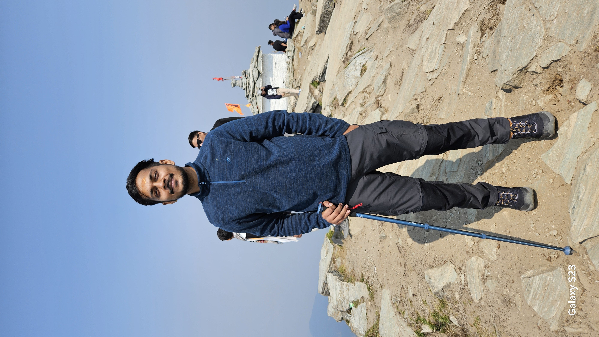

From Kota to Delhi – The Beginning of My Journey
My journey began from Kota, Rajasthan. I had no companions — it was just me, my backpack, and a deep desire to explore the spiritual and natural beauty of the Himalayas. Upon reaching Delhi, destiny had a surprise waiting. I met another solo traveler named Abhishek, and to my amazement, he too was headed to Tungnath Mahadev. We instantly clicked and decided to continue our journey together.
Delhi to Rishikesh – The Road to the Hills
From Delhi, we took a government roadways bus that took us all the way to Rishikesh — a serene town nestled on the banks of the Ganges. We decided to rest here for a night to recharge and prepare for the trek ahead. The calm of Rishikesh, the sound of the flowing river, and the spiritual energy of the place added more meaning to our trip.
Rishikesh to Chopta – Reaching the Base
The next day, we continued our journey towards Chopta, the base camp for the Tungnath trek. Surrounded by forests and snow-capped peaks, Chopta was nothing short of a dream. We stayed the night here, excited for the adventure that awaited us the next morning.
The Trek Begins – A Walk to the Highest Shiva Temple
At around 3:30 AM, under a star-lit sky, we began our ascent to Tungnath Mahadev Temple, which is the highest Shiva temple in the world. The trail was peaceful, and with every step, the sky slowly started to turn orange. By 6:00 AM, we reached the temple, just in time to witness a breathtaking sunrise over the Himalayan peaks. We offered our prayers at the temple and sat there in silence, taking in the divine vibes of the place. It felt like time had stopped.


Chandrashila – Touching the Sky
But the journey didn’t end there. Just 1.5 kilometers above the temple lies the Chandrashila Peak. After resting a while, we started the steep climb. The air got thinner, the views grander, and the experience more intense. In about an hour and a half, we reached the top. Standing at over 13,000 feet, the panoramic view from Chandrashila was surreal — snow-covered mountains, floating clouds, and a sense of peace that words can’t describe. It was the perfect ending to a spiritual and adventurous journey. This trip changed something in me — it gave me clarity, strength, and unforgettable memories. Whether you are a solo traveler or someone seeking inner peace, the Tungnath-Chandrashila trail has something magical to offer.
